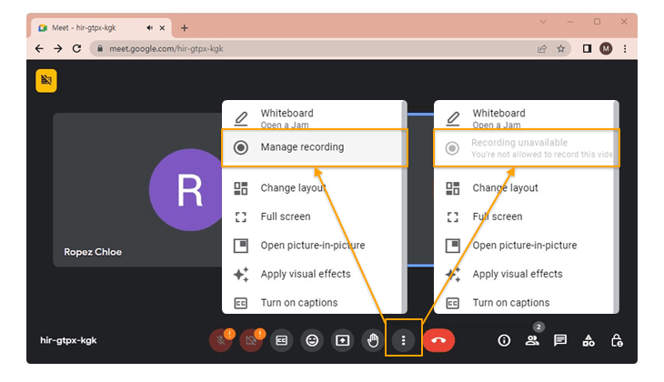

Google Meet's built-in recording requires a paid Workspace account and notifies everyone. Third-party tools like Otter.ai and Fireflies join as visible bots — and upload your audio to their cloud servers for processing. If you're privacy-conscious or tired of $15-20/month subscriptions, there are better options.
This guide compares five ways to record Google Meet in 2026, from free tools to local AI transcription. We'll cover what each costs over a year, where your data goes, and which works best for different needs.
TL;DR
- Best overall: mono — $50 once (vs $96-200/yr for subscriptions), local AI, no bot, works with any app
- Best free: OBS Studio — no transcription, requires setup
- Cloud alternative: Krisp — $8/mo ($96/yr), cloud transcription, needs internet
- Built-in: Google Meet — Workspace only, notifies everyone
- Captions only: Tactiq — $12/mo, no actual audio recording
Quick Comparison
| Method | Price | Year 1 Cost | Data | Bot? |
|---|---|---|---|---|
| mono | $50 once | $50 | Stays local | No |
| Krisp | $8/mo | $96 | Cloud upload | No |
| OBS Studio | Free | $0 | Stays local | No |
| Google Meet | Workspace | $144+ | Google Cloud | Notification |
| Tactiq | $12/mo | $144 | No audio stored | No |
Method 1: mono (Recommended)
mono captures audio directly from your computer's sound output — no bot joins the meeting, no notification appears, and your audio never leaves your device. Unlike cloud-based tools, mono processes everything locally. Your meeting recordings stay on your computer, not on third-party servers.
The one-time $50 price includes lifetime updates. Compare that to Krisp ($96/year), Otter.ai ($200/year), or Fireflies ($120-230/year) — mono pays for itself in 3-6 months.
Beyond Google Meet, mono works with any app that plays audio: Discord, WhatsApp, Telegram, Zoom, Teams, phone calls via desktop — all recorded in one place with automatic transcription.
After transcription, mono's local AI lets you search by meaning (not just keywords), ask questions about your recordings ("What did we decide about the timeline?"), and auto-generate summaries with action items. All processing happens on your device.
How to record Google Meet with mono
- Download mono from mono-ai.uk and install it
- Open mono and click Record
- Join your Google Meet meeting
- When finished, click Stop — transcription starts automatically
- Search recordings by keyword, date, or semantic meaning

Pros: Audio stays on your device (no cloud upload), works offline, no subscription ($50 once vs $100-200/year), works with any app, AI chat and summaries, semantic search across all recordings.
Cons: Requires local processing power (works on most modern computers), no real-time transcription during the call, no integrations with Slack/HubSpot (standalone app).
Method 2: Krisp
Krisp is a meeting assistant that records system audio and transcribes using cloud AI. Like mono, it captures audio without joining as a bot — no one in the meeting sees anything. Krisp also includes noise cancellation that removes background sounds from your recordings.
Transcription happens in the cloud and supports 16 languages with speaker identification. Krisp integrates with Slack, Teams, HubSpot, and other tools to sync meeting notes automatically.
How to record Google Meet with Krisp
- Download Krisp from krisp.ai and install it
- Create an account and enable meeting recording
- Join your Google Meet — Krisp detects the call automatically
- Recording and transcription start automatically
- When the meeting ends, view your transcript in the Krisp app
Pros: No bot visible, automatic recording, noise cancellation, 16-language transcription, integrations with productivity tools, SOC 2 and GDPR compliant.
Cons: Subscription required ($8/month annual), transcription processed in cloud, 7-day free trial only (no permanent free tier).
Method 3: OBS Studio (Free)
OBS Studio is a free, open-source screen recorder that can capture system audio and your screen. It doesn't join the meeting as a participant, works with any Google account, and is completely invisible to others in the meeting.
OBS is popular with streamers and content creators, but it works just as well for recording Google Meet audio calls. The main limitation is that it produces raw audio or video files without transcription.
How to record Google Meet with OBS
- Download OBS Studio from obsproject.com and install it
- Open OBS and go to Settings → Audio
- Set "Desktop Audio" to your playback device (speakers or headphones)
- In the main window, click + under Sources
- Add an "Audio Output Capture" source for audio-only recording
- Optionally add "Display Capture" for video recording
- Click "Start Recording" before joining Google Meet
- Join and participate in your meeting
- Click "Stop Recording" when the meeting ends
- Find your recording in the output folder (usually Videos)

Pros: Completely free and open source, no bot visible, works with any Google account, can record video calls with screen recording.
Cons: Requires initial setup, you must manually begin recording and stop recording for each meeting, no transcription — produces raw audio/video files only.
Method 4: Google Meet's Built-in Recording
Google Meet has native recording functionality, but with significant limitations. Recording is only available on Google Workspace accounts at Business Standard tier or higher — free Gmail accounts cannot use this feature. When recording starts, all participants see a notification and a red indicator that the meeting is being recorded.
For organizations where transparency is expected and everyone knows meetings are recorded, this is the simplest option. Recordings are saved directly to Google Drive with automatic transcription.

Pros: No additional software needed, recording saved directly to Google Drive, includes automatic transcript, video quality matches the meeting.
Cons: Requires paid Workspace account (no free option), all participants see recording notification, only meeting organizers can start recording, recordings stored in Google's cloud.
Method 5: Tactiq (Browser Extension)
Tactiq is a Chrome extension that takes a different approach: instead of recording audio, it captures Google Meet's auto-generated captions as you speak. It compiles the live captions into a transcript you can export, without storing any actual audio.
This is useful when you only need text documentation and audio recording isn't necessary — or when recording would create privacy concerns. However, transcript quality depends entirely on Google Meet's caption accuracy.
Pros: No audio recording means fewer privacy concerns, works in browser without additional software, affordable at $12/month, invisible to other participants.
Cons: No actual audio recording (can't listen back), quality depends on Meet's caption accuracy (may miss words or speakers), Chrome browser only, requires Meet captions to be enabled.
Recording Video vs Audio Only
Google Meet includes video, but you don't always need video recording:
Audio-only (mono): Captures the conversation with automatic transcription. Often sufficient since most recordings are for documentation. Files are small and searchable.
Full video recording (OBS): Captures your screen showing the Google Meet window. Useful when visual content matters — presentations, shared screens, demonstrations. Video quality depends on your connection, and files are much larger.
Legal Considerations
Before recording Google Meet calls, understand the legal requirements in your jurisdiction:
One-party consent: Many regions allow recording meetings you're participating in without informing others.
All-party consent: Some jurisdictions require everyone to agree to recording. This includes California, Germany, and other areas.
For business meetings, check your organization's policies. Many companies require disclosure when recording, regardless of legal requirements.
Which Method Should You Use?
Free Google account + need transcription? mono ($50 once) keeps everything local. Krisp ($8/mo) offers cloud transcription with noise cancellation.
Free Google account + don't need transcription? OBS Studio is reliable but requires initial setup.
Need integrations with Slack, HubSpot, etc? Krisp syncs notes automatically with productivity tools.
Have Workspace + don't mind notification? Google's built-in recording is simplest — no additional software needed.
Only need text, not audio? Tactiq captures captions without recording audio — good for privacy-sensitive situations.
For video recording: OBS Studio with screen recording captures both video and audio. mono focuses on audio with local transcription.